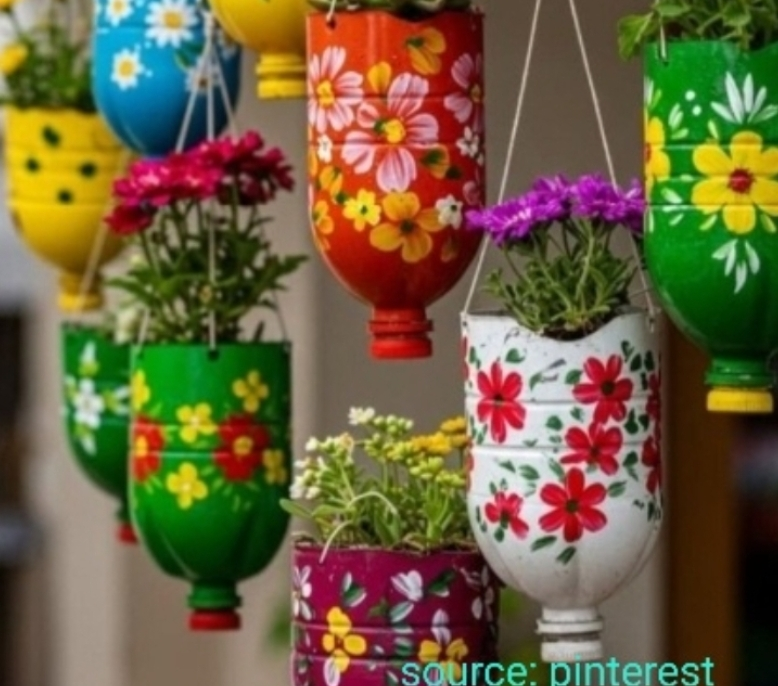

.jpeg)
Introduction
Plastic recycling is the need of the hour. Have you ever wondered how much plastic we contribute to the environment as individuals? Sustainability does not begin with policies and regulations. It can start at home.
India generates more than 25,000 tonnes of plastic waste every single day. It is true that upcycling plastic bottles can be beneficial for sustainable living.
It is not only a good business alternative but a resilient move towards climate change. Plastic contains chemicals such as polyethylene and polypropylene, which can slowly reduce the fertility of soil.
This is not a big problem as most of us can turn this waste into handmade products. These handmade products will be both convenient as well as climate friendly.
Why does upcycling matter?
In the lush hills, plastic bottles can become a solution shaped by human creativity and care. These eco-friendly crafts can later be sold in local fairs, and online businesses.
In rural areas, proper waste collection is limited. Plastic bottles are often dumped or burned, causing environmental and health problems. Village-level reuse of plastic bottles supports eco-friendly living and sustainable rural practices.
Reusing plastic at home helps keep the environment clean. This practice encourages responsible waste management starting from every household.
.jpeg)
Creative ways to reuse plastic bottles
DIY PLANT POTS
These DIY plant pots can elevate the look of your room. Start by collecting used plastic water bottles, and washing them thoroughly, now you can cut it in a pot shape.
Punch small drainage holes at the bottom to prevent waterlogging.
Paint and seal these shapes into desired patterns and mosaics; Then, fill the bottle with soil and compost.
Plant herbs or small plants like mint, aloe vera, or money plant and place this planter in your balcony, kitchen garden; where it gets adequate sunlight.
BIRD FEEDERS
A bird feeder can help pigeons and crows find food and help create environmental awareness among children.
Rinse the bottle carefully and cut feeding holes in two places for birds to find the grains.
Push a wooden stand in these holes for birds to feed quietly. Add dry grains like rice, pulses, wheat or seeds and tie the bottle with a small rope. Place the feeder on a terrace or balcony, where birds can spot food easily.

STATIONERY ORGANISER
Your old plastic bottle can perfectly organize pencils, pens, and other stationery supplies.
Cut the upper funnel of the plastic bottle. Cover the outer edges with paper, mosaic print, fabric, or paint.
WALL HANGING CRAFT
This is a sustainable way of creating your daily plastic waste into handmade decorative wall hanging craft. By supporting climate awareness, you support creative upcycling in everyday life.
You could easily cut plastic into designs or wrap it with jute or cotton. Hang it with a hook or jute fabric.
In this way, you could give your plastic waste a tinge of your creativity.

STORAGE CONTAINERS
Old plastic bottles can be the best eco friendly alternative commonly used in India. You could store pulses, maize, or rice in a cost effective and efficient way.
WATER SPRINKLER
Piled up plastic bottles can become a tool for gardening. You only need to push a few holes in the cap and use it for watering plants.
In this way, you could promote smart use of plastic and environmental conservation.
PIGGY BANK
Punch a wide hole in the middle of the plastic bottle. This is the coin slot. You could use cloth or paper to transform this bottle into a piggy bank.
This piggy bank can save money and reduce wastage in the environment.

GARDEN LABELS
Label the plants in your garden through these used plastic bottles with the use of a marker.
In this way, you can easily understand which flower or herb you have planted.
DIY LANTERNS
Use fevicryl colours and outline the bottle with colours of your choice and let it dry. Place LED lights in the bottle.
You could elevate the look of your room and promote climate friendly initiative in a single go.

PET TOYS
Seal the bottle with a few pebbles or pet- friendly treats and let your little munchkin play with it. In this way, they can stay busy for a long time.
Conclusion
Recycling plastic waste is the only way in which we can promote a green lifestyle. A little creative effort made by individuals can bring transformational change in the society.
Re-using plastic waste is not just a matter of great importance for urban populated areas but also rural villages.
Plastic upcycling can help protect the fertility of soil and natural resources. Plastic upcycling proves that, instead of going to waste, it can become a household item.
A small contribution can help create a significant impact in promoting a green lifestyle. After all, this is all we could possibly do to make a social impact in the environment.